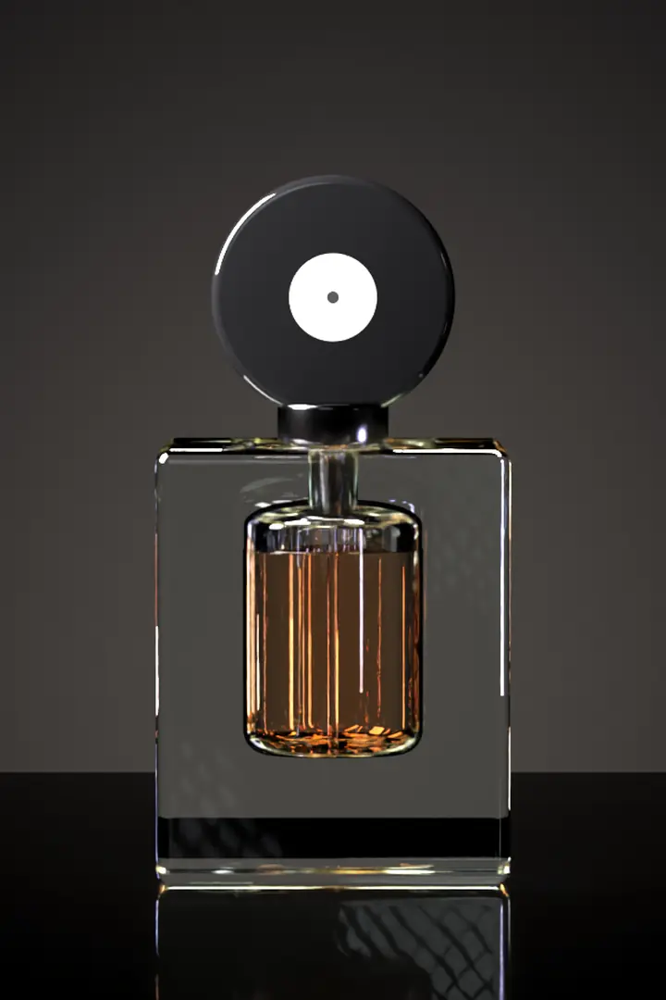

Drag to turn
Eau de Parfum · Three notes. One chord.
Spin the bottle.
Each note has its own light. As the bottle turns, the light crosses the glass and the notes swell and fade; the chord below is drawn from their sum.
- TOPBergamot660 Hz
- HEARTIris275 Hz
- BASEAmber110 Hz
θ 000°